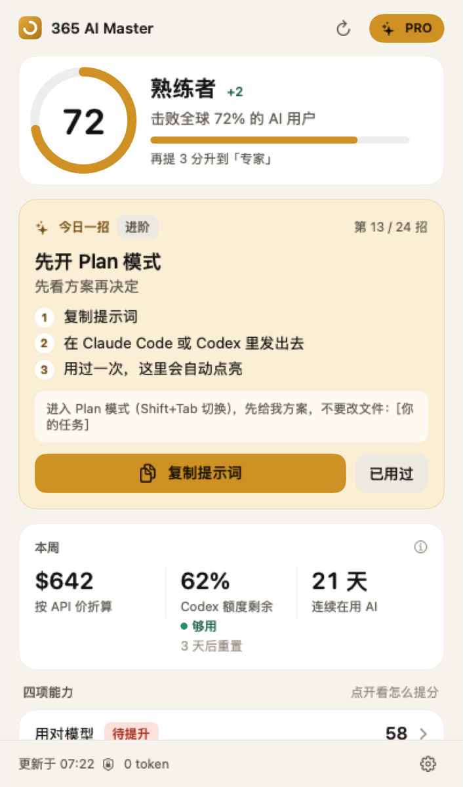
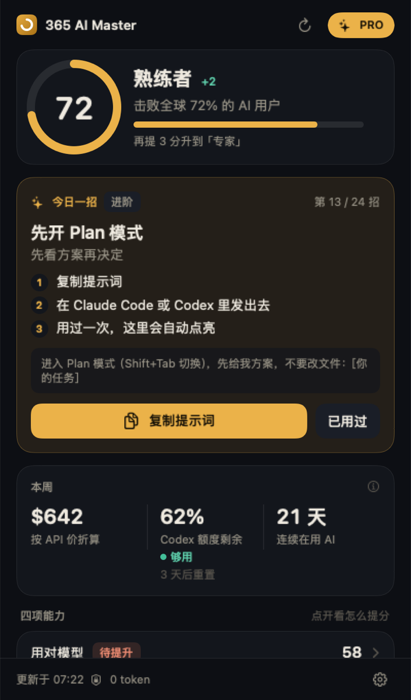
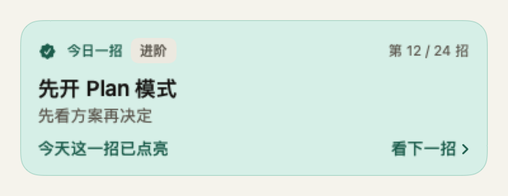
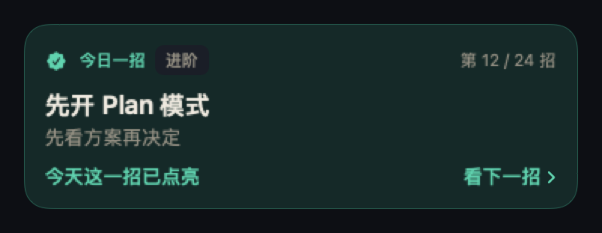
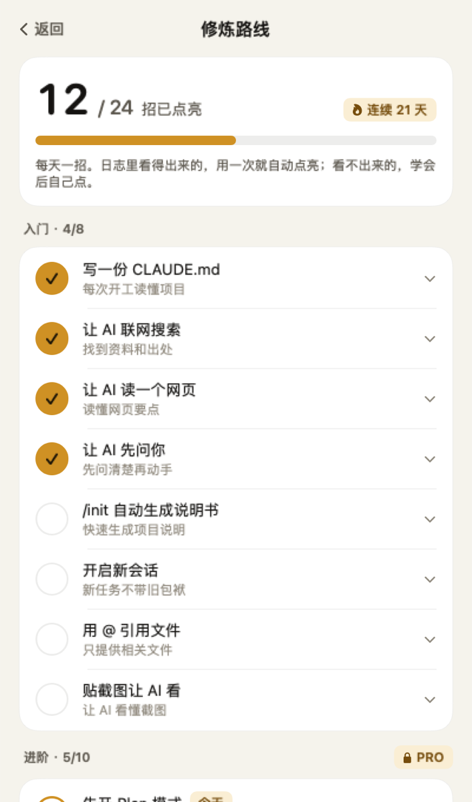
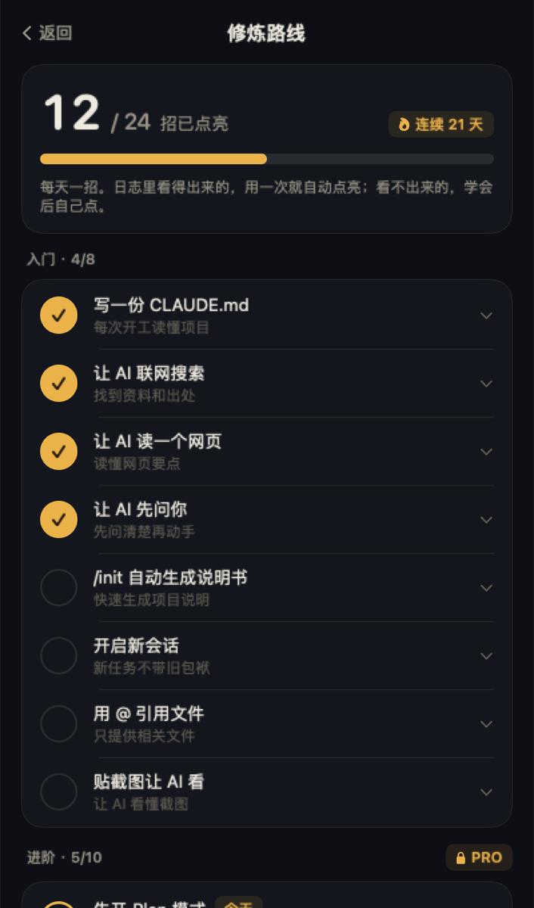
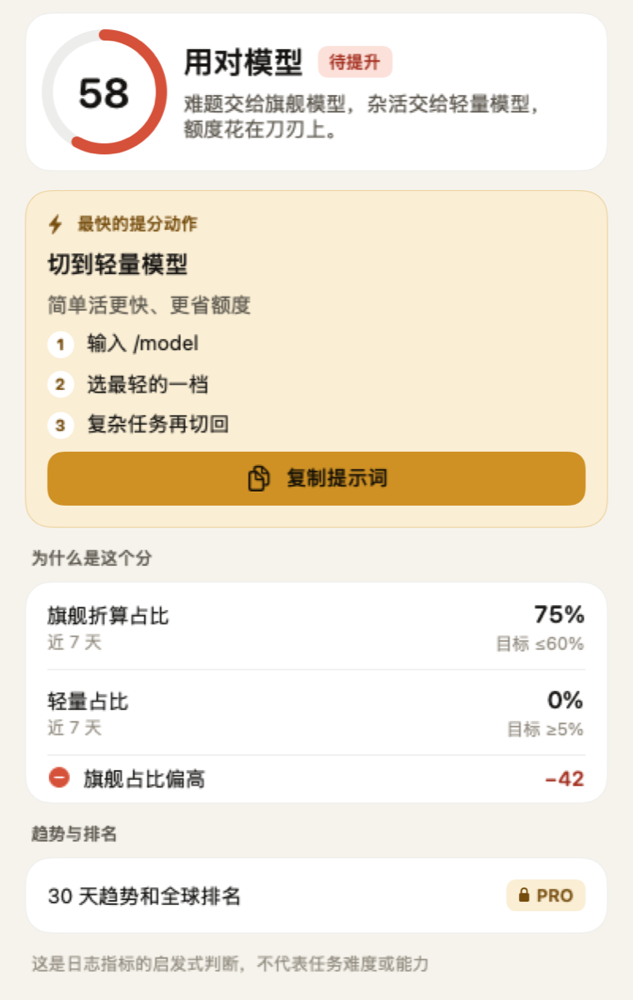
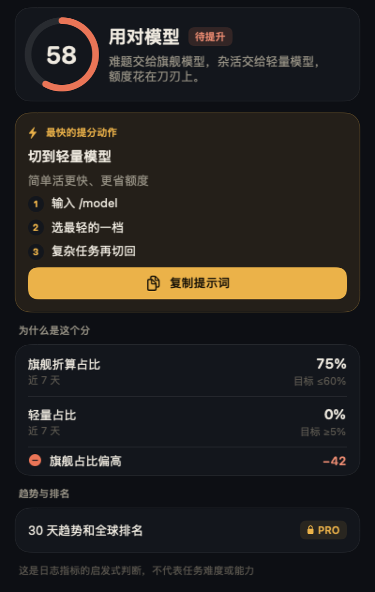

你现在是什么段位
一个 0 到 100 的分数，五个段位，从新手到大师。四项能力分别打分：用对模型、专注节奏、上下文管理、能力复用。
Claude Code 和 Codex 用户的菜单栏教练
它读你 Mac 上已有的 AI 使用记录，告诉你现在是什么段位、今天该练哪一招。用一次，日志里看得到，就自动点亮。全程在本机计算，不花你一个 token。


不用看报表，不用配置。打开就知道自己在哪、今天做什么、这周怎么样。
一个 0 到 100 的分数，五个段位，从新手到大师。四项能力分别打分：用对模型、专注节奏、上下文管理、能力复用。


从你还没用过的技巧里挑一招，附上能直接粘贴的提示词。日志看得出来的，用一次就自动点亮；看不出来的，学会后自己打勾。
按公开 API 价格折算这周的用量；Codex 额度还剩多少、几天后重置、按现在的速度够不够用。
别的工具告诉你用了多少，365 告诉你用得好不好，再陪你把下一招练会。
分数旁边有个小金点，说明今天这一招还没练。
每一招都配好了能直接用的提示词。
正常干你的活，不需要额外操作，也不用切出去填表。
下次刷新时，365 在本机日志里看到你用了，这一招点亮，修炼路线前进一格。


每一招都来自真实的工作方式：写 CLAUDE.md、Plan 模式、子代理、MCP、Hook、worktree……先把入门打牢，再往上走。
点开任何一项能力，看到的是你自己的数字：旗舰模型占了多少、轻量模型用了多少、目标是多少。再给你一个最快的提分动作，复制提示词就能练。


0token。分析不调用任何 AI，
不花你的额度。
评分规则写在开源代码里，同样的记录永远算出同样的分。
~/.claude、~/.codex 等目录里的使用记录，只读不改。免费版就能用起来。想走完全部 365 天，再升级 Pro。
Pro
$12 / 年
创始价 · 约每月 $1
试用不绑卡，到期自动回到免费版。付款通道开通后支持微信支付、支付宝、银行卡和 Apple Pay。
不会。分析全部在你的 Mac 上用规则完成，不调用任何 AI 模型，也不会把你的记录发给模型。
Claude Code 和 Codex 已完整支持。Gemini CLI、OpenCode 和 Qwen Code 能识别，正在逐步接入。
四项能力各 100 分，按权重合成总分：模型用得对不对、时间是否集中、会话是否整洁、常干的活有没有沉淀成技能。每一项都列出你的数字和目标，规则写在开源代码里。
它们告诉你用了多少额度；365 告诉你用得好不好、今天该练哪一招，并且在日志里确认你真的用上了。额度显示我们也有，但那只是一小部分。
来自自愿加入匿名排名的用户。参与人数少于 20 时只显示早期名次，不说“全球”。不加入也能正常使用全部功能。
暂时只有 Mac 版。
14 天试用不用付钱。付款后如需退款，凭购买凭证联系我们处理。